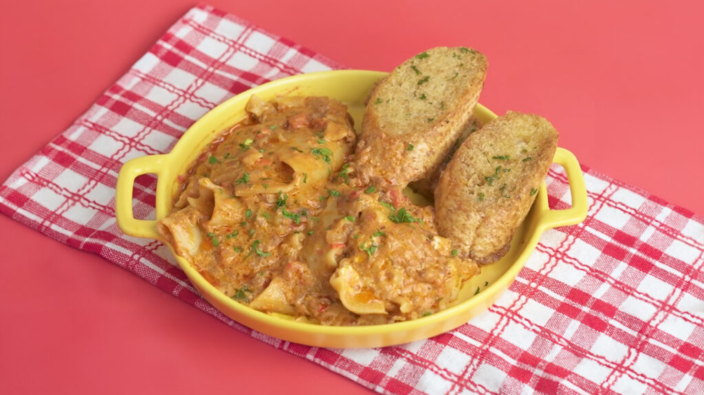

One Pot Lasagna

Description
Lasagna is normally a kind of recipe that takes a lot of time and effort to make, but is absolutely delicious once it is cooked. To make cooking it easier, Chef Tatung will show you how to create a One Pot Lasagna that will save you time and effort.
With the added aromatics to create an even more flavorful sauce, this Lasagna recipe will have you cooking it repeatedly. Rather than the time-consuming version, this rendition will be cooked in a few minutes, offering you and your loved ones a meal with minimal waiting time.
Ingredients
- Oil, for sautéing
- 3 Tbsps. butter
- 1/4 cup onion, minced
- 3 Tbsps. celery, minced
- 4 cloves garlic, minced
- 500 g. ground beef
- 1 tsp. dried oregano
- 1 tsp. dried basil
- 3 cups canned tomato
- 2 cups beef stock
- 450 g. lasagna sheets, broken into two
- 1/4 cup red bell pepper, chopped
- 1 cup Nestle All-Purpose Cream
- 1/2 cup cheddar cheese, grated
- 1 cup mozzarella cheese, grated
- 1/4 cup parmesan cheese, grated
- 1 pack Maggi Magic Sarap
- Salt and pepper
Toppings:
- 1 cup mozzarella cheese
- Chopped parsley
Instructions
- In a pot, heat the oil and butter. Sauté the onion, garlic, and celery for 1 minute. Once the aromatics have softened, add the ground beef, dried basil, and dried oregano. Let it cook until the beef has browned.
- Add the canned tomato, chopped bell peppers, and beef stock. Leave it to simmer. Once it starts to simmer, add the lasagna sheets and Nestle All-Purpose Cream. Mix well.
- Cover and leave it to cook for 7 minutes.
- When the 7 minutes are up, add the cheddar cheese, mozzarella cheese, parmesan cheese, and Maggi Magic Sarap. Mix until the cheese spreads evenly. Season with salt and pepper.
- Top with mozzarella cheese and parsley. Cover and let it rest for 30 minutes before serving.